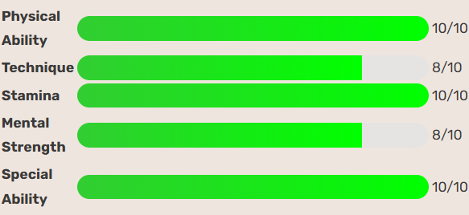
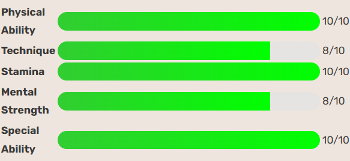

The Rebound King
Hanamichi Sakuragi is the brash, loud, and unforgettable red-haired rookie of Shohoku High. Known initially as a delinquent and hopeless romantic who got into fights more often than class, Sakuragi had zero interest in basketball until he fell head over heels for Haruko Akagi (sister of Takenori Akagi). What started as an attempt to impress a girl turned into a journey of transformation. Though inexperienced and impulsive, Sakuragi possesses extraordinary natural athleticism, incredible jumping power, and relentless energy on the court. His unmatched tenacity for grabbing rebounds earned him the nickname “Rebound King,” and his rapid improvement surprised everyone, including himself. Behind his comical arrogance and hot-headedness lies a heart that genuinely cares about his team, his pride, and eventually, the game itself. From a laughingstock to a rising star, Sakuragi’s journey captures the spirit of perseverance and growth that defines Shohoku’s underdog story.